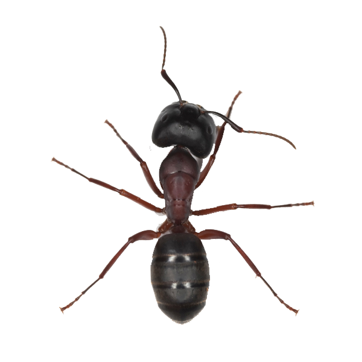
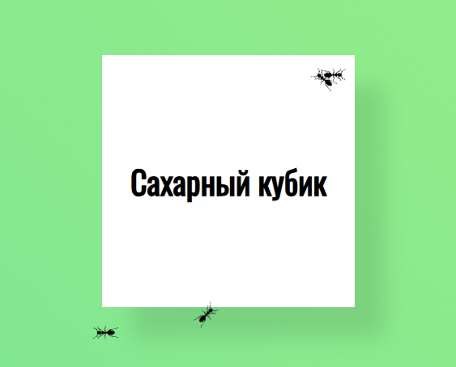
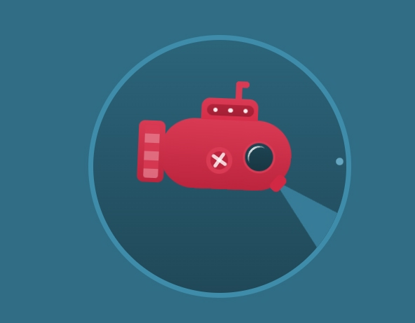

ЛАБОРАТОРИЯ ФОРМЫ И ДВИЖЕНИЯ
Чистый CSS.
Живая геометрия.
Четыре сцены, в которых всё движется по своим правилам.
От маленького муравья до настоящей глубины 3D.
ДВИЖЕНИЕ ПО ТРАЕКТОРИИ
Операция «Сахар»
кубик

Три муравья обходят сахар по разным маршрутам и с разной скоростью. Поворот следует направлению движения.
Траектории и источник PNG
Три независимых CSS-пути, длительности 14, 18 и 22 секунды. offset-distance меняется от 0 до 100%, offset-rotate: auto разворачивает муравья вдоль пути.
Прозрачный PNG сохранён локально. Источник: FreePNGimg — Ant Picture.

ПОДВОДНЫЙ МИР
Тихий ход
Субмарина мягко всплывает и ныряет, наклоняется на ±15°. Сзади бежит шахматная полоса, вращается крест, лампочки светятся.
Что анимировано
- Корпус — вертикальное смещение и поворот относительно центра.
- Турбина — движение шахматного фона по вертикали.
- Крестовой механизм — непрерывный полный оборот.
- Три лампочки — свечение с разными задержками.
- Десять пузырьков — разные размеры, прозрачность, длительности и стартовые смещения. Всё обрезается границей круга.
Субмарина и пузырьки целиком нарисованы HTML и CSS, без изображений, SVG и canvas.

ЦВЕТ И ДИСКРЕТНЫЙ ПОВОРОТ
Двенадцать шагов
Сначала шесть треугольников по очереди становятся белыми. Затем в том же порядке возвращают синий цвет. После каждого выцветания — поворот на 125° вперёд.
Цикл без обратного вращения
Один шаг занимает 2 секунды: сначала 0,65 с меняется цвет, затем 1 с длится поворот и 0,35 с — остановка. Шесть шагов выцветания и шесть шагов восстановления образуют цикл 24 с.
Углы последовательно растут: 0°, 125°, 250° … 1500°. В конце все треугольники снова синие. Шестикратная симметрия скрывает границу повторения: 1500° совпадает с исходным силуэтом с точностью до 60°, поэтому видимого обратного поворота нет.
Отдельный образец фигуры для №15 не приложен; использована фигура из шести одинаковых треугольников.
ПЕРСПЕКТИВА И ОБЪЁМ